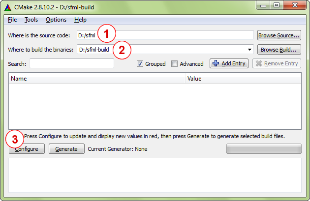
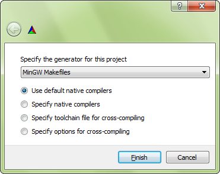
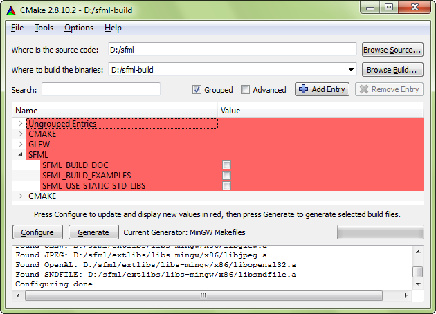
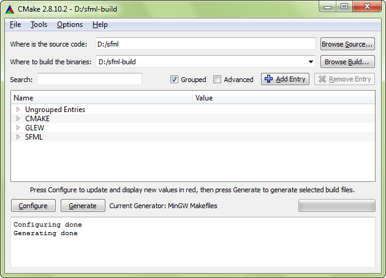

По общему признанию, название этого руководства немного вводит в заблуждение. Вы не будете компилировать SFML с помощью CMake, потому что CMake не является компилятором. Итак... что такое CMake?
CMake — это система метасборки с открытым исходным кодом. Вместо создания SFML он создает то, что создает SFML: решения Visual Studio, проекты Code::Blocks, make-файлы Linux, проекты XCode и т. д. Фактически он может генерировать make-файлы или проекты для любой операционной системы и компилятора по вашему выбору. Это похоже на autoconf/automake или premake для тех, кто уже знаком с этими инструментами.
CMake используется во многих проектах, включая такие известные, как Blender, CLion, KDE, Ogre и многие другие. Вы можете узнать больше о CMake на его официальном сайте или в статье в Википедии.
Как и следовало ожидать, это руководство разделено на два основных раздела: создание конфигурации сборки с помощью CMake и создание SFML с помощью цепочки инструментов с использованием этой конфигурации сборки.
SFML зависит от нескольких других библиотек, поэтому перед началом настройки вы должны установить их файлы разработки.
В Windows и macOS все необходимые зависимости предоставляются вместе с SFML, поэтому вам не нужно ничего загружать/устанавливать. SFML будет работать из коробки.
Однако в Linux ничего не предусмотрено. SFML полагается на то, что вы самостоятельно установите все его зависимости. Вот список того, что вам нужно установить перед сборкой SFML:
Точное название пакетов может варьироваться от дистрибутива к дистрибутиву. После установки этих пакетов не забудьте также установить их заголовки для разработки.
Этот шаг состоит из создания проектов/создание файлов, которые окончательно скомпилируют SFML. По сути, это выбор того, что строить, как строить и где строить. Есть также несколько других опций, которые позволяют вам создать конфигурацию сборки, соответствующую вашим потребностям. Мы увидим это в деталях позже.
Первое, что нужно выбрать, это место, где будут создаваться проекты/созданные файлы и объектные файлы (файлы, полученные в результате процесса компиляции). Вы можете сгенерировать их прямо в исходном дереве (т.е. в корневом каталоге SFML), но тогда оно будет засорено большим количеством мусора: полной иерархией файлов сборки, объектных файлов и т. д. Самое чистое решение — сгенерировать их в полностью отдельная папка, чтобы вы могли содержать свой каталог SFML в чистоте. Использование отдельных папок также упростит создание нескольких разных сборок (статических, динамических, отладочных, релизных и т. д.).
Теперь, когда вы выбрали каталог сборки, осталось сделать еще кое-что, прежде чем вы сможете запустить CMake. Когда CMake настраивает ваш проект, он проверяет доступность компилятора (а также проверяет его версию). Как следствие, исполняемый файл компилятора должен быть доступен при запуске CMake. Это не проблема для пользователей Linux и macOS, поскольку компиляторы устанавливаются по стандартному пути и всегда глобально доступны, но в Windows вам может потребоваться добавить каталог вашего компилятора в переменную среды PATH, чтобы CMake мог найти это автоматически. Это особенно важно, когда у вас установлено несколько компиляторов или несколько версий одного и того же компилятора.
В Windows, если вы хотите использовать GCC (MinGW), вы можете временно добавить каталог MinGW\bin в PATH, а затем запустить CMake из командной оболочки:
> set PATH=%PATH%;your_mingw_folder\bin
> cmake -G"MinGW Makefiles" ./build
С Visual C++ вы можете либо запустить CMake из «командной строки Visual Studio», доступной в меню «Пуск», либо запустить пакетный файл vcvars32.bat вашей установки Visual Studio в открытой консоли. Пакетный файл установит для вас все необходимые переменные среды в этом окне консоли.
> your_visual_studio_folder\VC\bin\vcvars32.bat
> cmake -G"NMake Makefiles" ./build
Теперь вы готовы запустить CMake. На самом деле есть три разных способа запуска:
cmake-gui
Это графический интерфейс CMake, который позволяет настроить все с помощью кнопок и текстовых полей. Это очень удобно для просмотра и редактирования параметров сборки и, вероятно, является самым простым решением для новичков и людей, которые не хотят иметь дело с командной строкой.
cmake
Это прямой вызов CMake. Если вы используете это, вы должны указать все имена опций и их значения в качестве параметров командной строки. Чтобы распечатать список всех параметров, запустите cmake -L.
В этом уроке мы будем использовать cmake-gui, так как это то, что, вероятно, будет использовать большинство новичков. Мы предполагаем, что люди, которые используют варианты командной строки, могут обратиться к документации CMake для их использования. За исключением скриншотов и инструкций по нажатию кнопок, все, что объясняется ниже, также применимо к вариантам командной строки (параметры те же).
Вот как выглядит графический интерфейс CMake:
Первые шаги, которые необходимо сделать, следующие (выполняйте их по порядку):
Если CMake запускается в этом каталоге впервые (или если вы очистили кеш), графический интерфейс CMake предложит вам выбрать генератор. Другими словами, здесь вы выбираете свой компилятор/IDE.
Например, если вы используете Visual Studio 2010, вам следует выбрать «Visual Studio 10 2010» из раскрывающегося списка. Чтобы сгенерировать make-файлы, которые можно использовать с NMake, в командной строке Visual Studio выберите «NMake Makefiles». Чтобы создать make-файлы, которые можно использовать с MinGW (GCC), выберите «MinGW Makefiles». Как правило, проще создавать SFML с помощью make-файлов, а не проектов IDE: вы можете собрать всю библиотеку с помощью одной команды или даже объединить несколько сборок в одном сценарии. Поскольку вы планируете только создавать SFML, а не редактировать его исходные файлы, проекты IDE не так полезны.
Процесс установки (описанный ниже) может не работать с генератором «Xcode». Поэтому настоятельно рекомендуется использовать генератор Makefile при сборке на macOS.
Всегда оставляйте включенной опцию «Использовать собственные компиляторы по умолчанию». Остальные три поля можно не трогать.
После выбора генератора CMake запустит серию тестов, чтобы собрать информацию о вашей среде цепочки инструментов: путь к компилятору, стандартные заголовки, зависимости SFML и т. д. Если тесты пройдены успешно, он должен завершиться с сообщением «Настройка выполнена». Если что-то пойдет не так, внимательно прочитайте ошибки, напечатанные в выходном журнале. Возможно, ваш компилятор недоступен (см. выше) или настроен неправильно, или что одна из внешних зависимостей SFML отсутствует.
После завершения настройки параметры сборки отображаются в центре окна. Сам CMake имеет множество опций, но большинство из них по умолчанию уже имеют правильное значение. Некоторые из них являются переменными кеша, и их лучше оставить без изменений, они просто предоставляют информацию о том, что CMake автоматически нашел.
Вот несколько параметров, на которые вы можете обратить внимание при настройке сборки SFML:
| Переменная | Значение |
|---|---|
| CMAKE_BUILD_TYPE |
Этот параметр выбирает тип конфигурации сборки. Допустимые значения: «Debug» и «Release» (существуют и другие типы, такие как «RelWithDebInfo» или «MinSizeRel», но они предназначены для более сложных сборок). Обратите внимание, что если вы создаете рабочую область для IDE, которая поддерживает несколько конфигураций, например Visual Studio, этот параметр игнорируется, поскольку рабочая область может содержать несколько конфигураций одновременно. |
| CMAKE_INSTALL_PREFIX |
Это путь установки. По умолчанию установлен наиболее типичный для операционной системы путь установки («/usr/local» для Linux и macOS, «C:\Program Files» для Windows и т. д.). При создании фреймворков в macOS вы можете изменить значение на «/Library/Frameworks». Установка SFML после сборки не является обязательной, поскольку вы можете использовать двоичные файлы непосредственно из того места, где они были собраны. Однако может быть лучшим решением установить их правильно, чтобы вы могли удалить все временные файлы, созданные в процессе сборки. |
| SFML_DEPENDENCIES_INSTALL_PREFIX |
Это путь, по которому устанавливаются зависимости SFML, такие как Freetype и OpenAL. По умолчанию это то же самое, что и CMAKE_INSTALL_PREFIX, за исключением macOS, где по умолчанию используется «/Library/Frameworks», поскольку зависимости от macOS предоставляются в виде фреймворков. Как указано выше для CMAKE_INSTALL_PREFIX, не обязательно устанавливать SFML после его сборки, но это определенно чище. |
| SFML_MISC_INSTALL_PREFIX |
Это путь, по которому устанавливаются примеры SFML, документация, лицензия и файлы readme. В Windows по умолчанию используется CMAKE_INSTALL_PREFIX и CMAKE_INSTALL_PREFIX/share/SFML во FreeBSD, Linux. В macOS по умолчанию используется «/usr/local/share/SFML». |
| BUILD_SHARED_LIBS |
Этот логический параметр определяет, будете ли вы создавать SFML как динамические (общие) библиотеки или как статические. Эту опцию не следует включать одновременно с SFML_USE_STATIC_STD_LIBS, они взаимоисключающие. |
| SFML_BUILD_FRAMEWORKS (только macOS) |
Эта логическая опция определяет, будете ли вы создавать SFML в виде пакетов фреймворка или в виде бинарных файловdylib. Для построения фреймворков необходимо выбрать BUILD_SHARED_LIBS. Рекомендуется использовать SFML в качестве фреймворка при публикации ваших приложений. Однако обратите внимание, что SFML не может быть встроен в конфигурацию отладки как фреймворк. В этом случае используйте вместо этого dylibs. |
| SFML_BUILD_EXAMPLES |
Этот логический параметр определяет, будут ли примеры SFML создаваться вместе с библиотекой или нет. |
| SFML_BUILD_DOC |
Эта логическая опция определяет, будете ли вы генерировать документацию SFML или нет. Обратите внимание, что инструмент Doxygen должен быть установлен и доступен, иначе включение этой опции приведет к ошибке. В macOS вы можете либо установить двоичный файл doxygen для классического Unix в /usr/bin или любой подобный каталог, либо установить Doxygen.app в любую папку «Приложения», например. ~/Приложения. |
| SFML_BUILD_AUDIO |
Эта логическая опция определяет, будет ли построен аудиомодуль SFML или нет. |
| SFML_BUILD_GRAPHICS |
Эта логическая опция определяет, будет ли построен графический модуль SFML. |
| SFML_BUILD_WINDOW |
Эта логическая опция определяет, будет ли построен оконный модуль SFML или нет. |
| SFML_BUILD_NETWORK |
Эта логическая опция определяет, будет ли построен сетевой модуль SFML. |
| SFML_USE_SYSTEM_DEPS |
Эта логическая опция определяет, используются ли зависимости из каталога extlibs или системные зависимости. Заголовок stb_image_* в каталоге extlibs используется независимо от этой опции. |
| SFML_USE_STATIC_STD_LIBS (только Windows) |
Этот логический параметр выбирает тип библиотеки времени выполнения C/C++, связанной с SFML. TRUE статически связывает стандартные библиотеки, что означает, что SFML является автономным и не зависит от конкретных библиотек DLL компилятора. FALSE (по умолчанию) динамически связывает стандартные библиотеки, что означает, что SFML зависит от библиотек DLL компилятора (msvcrxx.dll/msvcpxx.dll для Visual C++, libgcc_s_xxx-1.dll/libstdc++-6.dll для GCC). Будьте осторожны при настройке. Параметр должен совпадать с параметром вашего собственного проекта, иначе ваше приложение может не запуститься. Этот параметр не следует включать одновременно с BUILD_SHARED_LIBS, они взаимоисключающие. |
| SFML_GENERATE_PDB (только Visual Studio) |
Логический параметр определяет, должна или не должна Visual Studio создавать файлы PDB, которые представляют собой отдельные файлы, содержащие отладочные символы, необходимые для отладки SFML. |
| CMAKE_OSX_ARCHITECTURES (только macOS) |
Эта логическая опция определяет, для какой архитектуры должен быть скомпилирован SFML. Рекомендуемое значение — «x86_64», так как 32-битная компиляция не поддерживается. |
| CMAKE_OSX_ARCHITECTURES (только macOS) |
Этот логический параметр определяет, будет ли CMake устанавливать шаблоны Xcode в вашей системе или нет. Убедитесь, что /Library/Developer/Xcode/Templates/SFML существует и доступен для записи. Дополнительные сведения об этих шаблонах приведены в руководстве «Начало работы» для macOS. |
| SFML_INSTALL_PKGCONFIG_FILES (только общие библиотеки Linux) |
Этот логический параметр определяет, будет ли CMake устанавливать файлы pkg-config в вашей системе или нет. pkg-config — это инструмент, предоставляющий унифицированный интерфейс для запроса установленных библиотек. |
После того, как все настроено, еще раз нажмите кнопку «Настроить». Больше не должно быть никаких опций, выделенных красным, а кнопка «Создать» должна быть включена. Щелкните ее, чтобы, наконец, сгенерировать выбранные make-файлы/проекты.
CMake создает кеш переменных для каждого проекта. Поэтому, если вы решите перенастроить что-то позже, вы обнаружите, что ваши настройки были сохранены из предыдущей конфигурации. Внесите необходимые изменения, перенастройте и сгенерируйте обновленные make-файлы/проекты.
Давайте начнем этот раздел с хороших новостей: вам больше не придется проходить этап настройки, даже если вы обновите свою рабочую копию SFML. CMake умен: он добавляет настраиваемый шаг к сгенерированным make-файлам/проектам, который автоматически регенерирует файлы сборки всякий раз, когда что-то изменяется.
Теперь вы готовы построить SFML. Конечно, как это сделать, зависит от того, какие make файлы/проекты вы сгенерировали. Если вы создали проект/решение/рабочее пространство, откройте его в своей среде IDE и создайте SFML, как и любой другой проект. Мы не будем вдаваться в подробности здесь, просто слишком много разных IDE, и мы должны предположить, что вы достаточно хорошо знаете, как использовать свою, чтобы выполнить эту простую задачу самостоятельно.
Если вы создали make-файл, откройте командную оболочку и выполните команду make, соответствующую вашей среде. Например, запустите «nmake», если вы создали make-файл NMake (Visual Studio), «mingw32-make», если вы создали make-файл MinGW (GCC), или просто «make», если вы создали make-файл для Linux.
Примечание. В Windows программа make (nmake или mingw32-make) может быть недоступна. Если это так, не забудьте добавить его местоположение в переменную среды PATH. Дополнительные сведения см. в пояснениях в начале раздела «Настройка сборки SFML».
По умолчанию при сборке проекта будет собрано все (все библиотеки SFML, а также все примеры, если вы включили опцию SFML_BUILD_EXAMPLES). Если вы просто хотите создать конкретную библиотеку или пример SFML, вы можете выбрать другую цель. Вы также можете очистить или установить встроенные файлы с соответствующими целями.
Вот все доступные цели, в зависимости от выбранных вами параметров конфигурации:
| Цель | Значение |
|---|---|
| all |
Это цель по умолчанию, она используется, если цель не указана явно. Он создает все цели, которые создают двоичный файл (библиотеки и примеры SFML). |
|
sfml‑system sfml‑window sfml‑network sfml‑graphics sfml‑audio sfml‑main |
Создает соответствующую библиотеку SFML. Цель «sfml-main» доступна только при сборке для Windows. |
|
cocoa ftp opengl pong shader sockets sound sound‑capture voip window win32 X11 |
Создает соответствующий пример SFML. Эти цели доступны, только если включена опция SFML_BUILD_EXAMPLES. Обратите внимание, что некоторые цели доступны только в определенных операционных системах («cocoa» доступно в macOS, «win32» в Windows, «X11» в Linux и т. д.). |
|
doc |
Создает документацию по API. Эта цель доступна, только если включен SFML_BUILD_DOC. |
|
clean |
Удаляет все объектные файлы, библиотеки и примеры двоичных файлов, созданные предыдущей сборкой. Обычно вам не нужно вызывать эту цель, за исключением случаев, когда вы хотите полностью перестроить SFML (некоторые обновления исходного кода могут быть несовместимы с существующими объектными файлами, и единственным решением является очистка всего). |
|
install |
Устанавливает SFML по пути, заданному CMAKE_INSTALL_PREFIX и CMAKE_INSTALL_FRAMEWORK_PREFIX. Он копирует библиотеки и заголовки SFML, а также примеры и документацию, если включены SFML_BUILD_EXAMPLES и SFML_BUILD_DOC. После установки вы получаете чистый дистрибутив SFML, как если бы вы скачали SDK или установили его из репозитория пакетов вашего дистрибутива. |
Если вы используете IDE, цель — это просто проект. Чтобы создать цель, выберите соответствующий проект и скомпилируйте его (даже «чистый» и «установочный» должны быть собраны для выполнения — пусть вас не смущает тот факт, что на самом деле исходный код не компилируется).
Если вы используете make-файл, передайте имя цели команде make, чтобы построить цель. Примеры: «nmake doc», «mingw32-make install», «make sfml-network».
К этому моменту вы должны были успешно собрать SFML. Поздравляем!